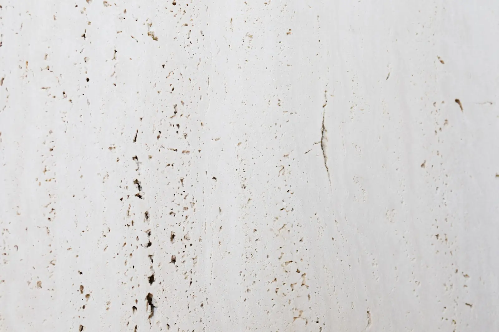

01
Materiais
Escolhemos pedras e madeiras com você, na marmoraria e no fornecedor. Cada chapa de pedra é reservada antes da obra para manter o veio contínuo.
- ·Visita à marmoraria com a arquiteta
- ·Prancha de materiais física, com amostras reais
- ·Especificação com marca, acabamento e código
 Casa Lago
Casa Lago Casa Pátio
Casa Pátio Apartamento Savassi
Apartamento Savassi Apartamento Lourdes
Apartamento Lourdes Cozinha Belvedere
Cozinha Belvedere Escritório Funcionários
Escritório Funcionários